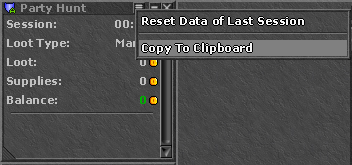
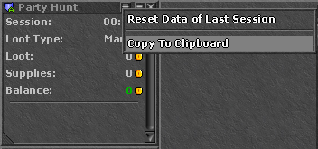

Party loot splitter
Need to share loot with your party members? Simply copy the output from the in-game “party hunt analyser” and paste it into the field below. The tool then tells you how to settle the balance.
Need to share loot with your party members? Simply copy the output from the in-game “party hunt analyser” and paste it into the field below. The tool then tells you how to settle the balance.
